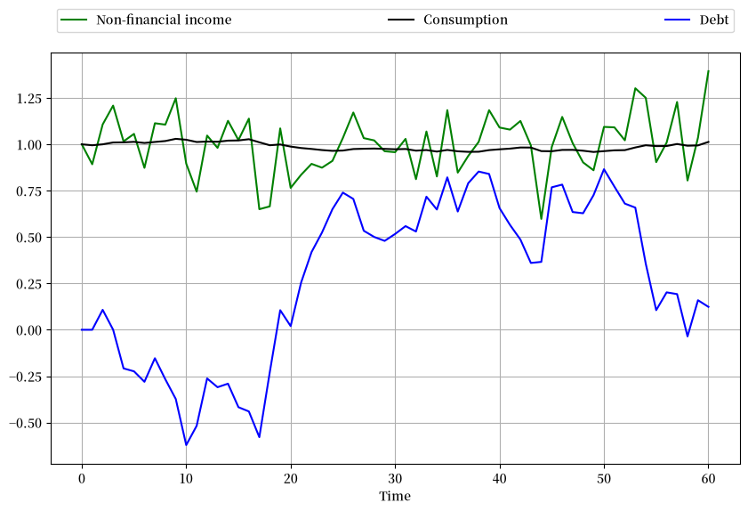
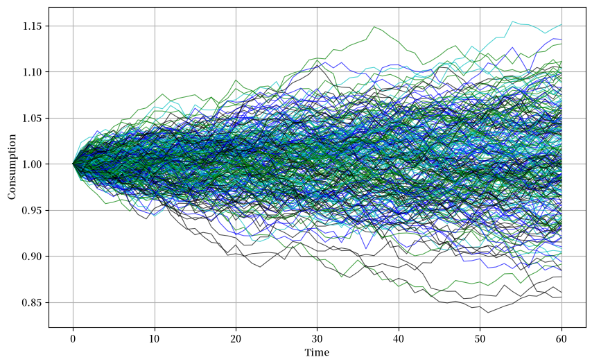
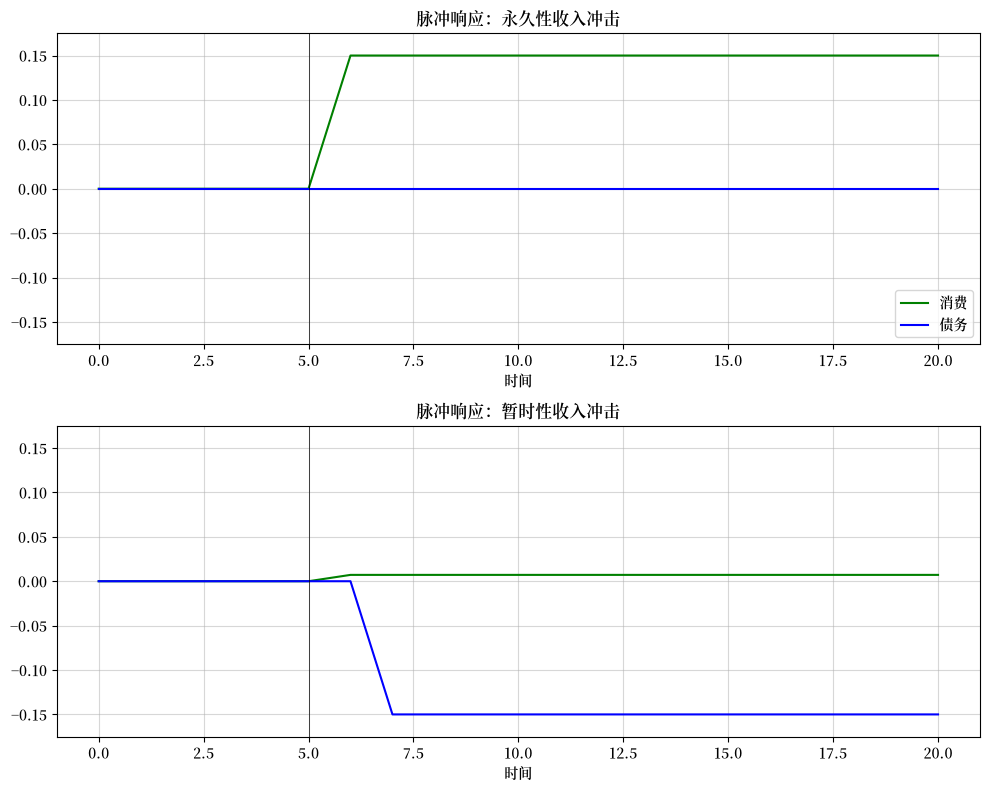

78. 永久收入模型#
78.1. 概述#
本讲座介绍了Milton Friedman著名的永久收入模型[Friedman, 1956]的理性预期版本。
Robert Hall在线性二次框架下重新阐述了Friedman的模型[Hall, 1978]。
与Hall一样，我们将构建一个无限期线性二次储蓄问题。
我们使用这个模型来说明
动态系统状态的不同表述方式
协整的概念
脉冲响应函数
消费变化作为收入变动预测指标的观点
关于线性二次高斯永久收入模型的背景阅读材料包括Hall的[Hall, 1978]和[Ljungqvist and Sargent, 2018]的第2章。
让我们从一些导入开始
import matplotlib.pyplot as plt
import matplotlib as mpl
FONTPATH = "fonts/SourceHanSerifSC-SemiBold.otf"
mpl.font_manager.fontManager.addfont(FONTPATH)
plt.rcParams['font.family'] = ['Source Han Serif SC']
plt.rcParams["figure.figsize"] = (11, 5) #设置默认图形大小
import numpy as np
import random
from numba import jit
78.2. 储蓄问题#
在本节中，我们将阐述并解决消费者面临的储蓄和消费问题。
78.2.1. 预备知识#
我们使用一类称为鞅的随机过程。
离散时间鞅是一个随机过程（即随机变量序列）\(\{X_t\}\)，在每个\(t\)时刻具有有限均值，并满足
这里\(\mathbb{E}_t := \mathbb{E}[ \cdot \,|\, \mathcal{F}_t]\)是基于时间\(t\)的信息集\(\mathcal{F}_t\)的条件数学期望。
后者只是建模者声明在\(t\)时刻可见的随机变量的集合。
当没有明确定义时，通常认为\(\mathcal{F}_t = \{X_t, X_{t-1}, \ldots, X_0\}\)。
鞅具有这样的特性：过去结果的历史对当前和未来结果之间的变化没有预测能力。
例如，参与”公平游戏”的赌徒的当前财富就具有这种特性。
鞅的一个常见类别是随机游走族。
随机游走是满足以下条件的随机过程 \(\{X_t\}\)：
其中 \(\{w_t\}\) 是某个独立同分布的零均值创新序列。
显然，\(X_t\) 也可以表示为
并非所有鞅都源自随机游走（例如，参见瓦尔德鞅）。
78.2.2. 决策问题#
消费者对消费流的偏好由以下效用泛函排序
其中
\(\mathbb{E}_t\) 是基于消费者在时间 \(t\) 的信息的条件数学期望
\(c_t\) 是时间 \(t\) 的消费
\(u\) 是严格凹的单期效用函数
\(\beta \in (0,1)\) 是贴现因子
消费者通过选择消费和借贷计划 \(\{c_t, b_{t+1}\}_{t=0}^\infty\) 来最大化 (78.1)，同时受到一系列预算约束
其中
\(y_t\) 是外生禀赋过程
\(r > 0\) 是时间不变的无风险净利率
\(b_t\) 是在 \(t\) 时到期的一期无风险债务
消费者还面临初始条件 \(b_0\) 和 \(y_0\)，这些可以是固定的或随机的。
78.2.3. 假设#
在本讲座的剩余部分，我们遵循 Friedman 和 Hall 的假设，即 \((1 + r)^{-1} = \beta\)。
关于禀赋过程，我们假设它具有状态空间表示
其中
\(\{w_t\}\) 是一个独立同分布的向量过程，其中 \(\mathbb{E} w_t = 0\) 且 \(\mathbb{E} w_t w_t' = I\)。
\(A\) 的谱半径 满足 \(\rho(A) < \sqrt{1/\beta}\)。
\(U\) 是一个选择向量，它将 \(y_t\) 确定为 \(z_t\) 分量的特定线性组合。
对 \(\rho(A)\) 的限制防止收入增长过快，以致下文将要描述的某些二次型的贴现几何和变为无穷大。
关于偏好，我们假设二次效用函数
其中 \(\gamma\) 是消费的极乐水平。
备注
在这个二次效用函数设定下，我们允许消费为负值。然而，通过适当选择参数，我们可以使模型在有限时间范围内产生负消费路径的概率降低到所需水平。
最后，我们施加无庞氏骗局条件
这个条件排除了一种永久借贷的方案，即消费者不能通过持续借贷来永远维持最理想的消费水平。
78.2.4. 一阶条件#
这些最优条件也被称为欧拉方程。
如果你不确定这些条件是如何得出的，可以在附录中找到证明概要。
在我们的二次效用函数设定下，(78.5)有一个显著的推论，即消费遵循鞅的性质：
（事实上，二次效用函数对于得出这个结论是必要的[1]。）
解释(78.6)的一种方式是，只有当关于永久收入的”新信息”出现时，消费才会发生变化。
以下将对这些观点进行阐述。
78.2.5. 最优决策规则#
现在让我们推导最优决策规则[2]。
备注
解决消费者问题的一种方法是像这节课中那样应用动态规划。我们稍后会这样做。但首先我们使用另一种方法，这种方法能揭示动态规划在幕后为我们做的工作。
在此过程中，我们需要结合
为了实现这一点，首先注意到(78.4)意味着\(\lim_{t \to \infty} \beta^{\frac{t}{2}} b_{t+1}= 0\)。
使用这个对债务路径的限制条件，并向前求解(78.2)得到
对(78.7)两边取条件期望，并使用消费的鞅性质和迭代期望法则，可以推导出
用\(c_t\)表示可得
其中最后一个等式使用了\((1 + r) \beta = 1\)。
这最后两个方程表明消费等于经济收入
金融财富等于\(-b_t\)
非金融财富等于\(\sum_{j=0}^\infty \beta^j \mathbb{E}_t [y_{t+j}]\)
总财富等于金融财富和非金融财富之和
总财富的边际消费倾向等于利息因子\(\frac{r}{1+r}\)
经济收入等于
边际消费倾向常数乘以非金融财富和金融财富的总和
消费者在保持其财富不变的情况下可以消费的金额
78.2.5.1. 对状态的响应#
消费者在 \(t\) 时面临的状态向量是 \(\begin{bmatrix} b_t & z_t \end{bmatrix}\)。
其中
\(z_t\) 是一个外生组成部分，不受消费者行为影响。
\(b_t\) 是一个内生组成部分（因为它取决于决策规则）。
注意，\(z_t\) 包含所有用于预测消费者未来禀赋的有用变量。
当前决策 \(c_t\) 和 \(b_{t+1}\) 应该可以表示为 \(z_t\) 和 \(b_t\) 的函数，这是合理的。
事实确实如此。
实际上，根据这个讨论，我们可以看到
将这个结果与(78.9)结合得到
使用这个等式在预算约束(78.2)中消去\(c_t\)得到
从倒数第二个表达式到最后一个表达式的推导并不简单。
关键是要使用\((1 + r) \beta = 1\)和\((I - \beta A)^{-1} = \sum_{j=0}^{\infty} \beta^j A^j\)这两个事实。
现在我们已经成功地将\(c_t\)和\(b_{t+1}\)表示为\(b_t\)和\(z_t\)的函数。
78.2.5.2. 状态空间表示#
我们可以用线性状态空间系统的形式来总结消费、债务和收入的动态:
更简洁地写，令
且
那么我们可以将方程 (78.11) 表示为
我们可以使用线性状态空间模型中的以下公式来计算总体均值 \(\mu_t = \mathbb{E} x_t\) 和协方差 \(\Sigma_t := \mathbb{E} [ (x_t - \mu_t) (x_t - \mu_t)']\)
然后我们可以通过以下公式计算 \(\tilde y_t\) 的均值和协方差
78.2.5.3. 一个简单的独立同分布收入示例#
为了对(78.11)的含义有初步的直观认识，让我们看一个高度简化的示例，其中收入是独立同分布的。
(后面的示例将研究更现实的收入流。)
特别地，令 \(\{w_t\}_{t = 1}^{\infty}\) 为独立同分布的标准正态分布标量，并令
最后，令 \(b_0 = z^1_0 = 0\)。
在这些假设下，我们有 \(y_t = \mu + \sigma w_t \sim N(\mu, \sigma^2)\)。
此外，如果你推导状态空间表示，你会发现
因此，收入是独立同分布的，而债务和消费都是高斯随机游走。
将资产定义为 \(-b_t\)，我们可以看到资产就是当前日期之前未预期收入的累积和。
下图显示了一个典型的实现，其中 \(r = 0.05\)，\(\mu = 1\)，且 \(\sigma = 0.15\)
r = 0.05
β = 1 / (1 + r)
σ = 0.15
μ = 1
T = 60
@jit
def time_path(T, rng):
w = rng.standard_normal(T+1) # w_0, w_1, ..., w_T
w[0] = 0
b = np.zeros(T+1)
for t in range(1, T+1):
b[t] = w[1:t].sum()
b = -σ * b
c = μ + (1 - β) * (σ * w - b)
return w, b, c
rng = np.random.default_rng()
w, b, c = time_path(T, rng)
fig, ax = plt.subplots(figsize=(10, 6))
ax.plot(μ + σ * w, 'g-', label="Non-financial income")
ax.plot(c, 'k-', label="Consumption")
ax.plot( b, 'b-', label="Debt")
ax.legend(ncol=3, mode='expand', bbox_to_anchor=(0., 1.02, 1., .102))
ax.grid()
ax.set_xlabel('Time')
plt.show()
findfont: Failed to find font weight normal, now using 600.

观察到消费比收入更加平稳。
下图显示了250个具有独立收入流的消费者的消费路径
fig, ax = plt.subplots(figsize=(10, 6))
b_sum = np.zeros(T+1)
for i in range(250):
w, b, c = time_path(T, rng) # Generate new time path
rcolor = random.choice(('c', 'g', 'b', 'k'))
ax.plot(c, color=rcolor, lw=0.8, alpha=0.7)
ax.grid()
ax.set(xlabel='Time', ylabel='Consumption')
plt.show()

78.3. 替代表示方法#
在本节中，我们通过几种不同的方式来表示储蓄、债务和消费的动态变化，以更清晰地展示它们的演变。
78.3.1. 霍尔的表示方法#
霍尔 [Hall, 1978] 提出了一种富有洞察力的方法来总结LQ永久收入理论的含义。
首先，为了表示\(b_t\)的解，将(78.9)向前移动一个时期，并使用(78.2)消除\(b_{t+1}\)，得到
如果我们在上述方程的右侧加上并减去\(\beta^{-1} (1-\beta) \sum_{j=0}^\infty \beta^j \mathbb{E}_t y_{t+j}\)，并重新整理，我们得到
右边是禀赋过程 \(\{y_t\}\) 的期望现值在时刻 \(t+1\) 的创新。
我们可以用 (78.16) 和 (78.8) 的形式表示 \((c_t, b_{t+1})\) 的最优决策规则，我们重复如下：
方程 (78.17) 表明，消费者在 \(t\) 时刻到期的债务等于其禀赋的期望现值减去其消费流的期望现值。
因此，高债务表明预期有较大的盈余 \(y_t - c_t\) 现值。
回顾我们在 预测几何和 中的讨论，我们有：
将这些公式与(78.3)结合使用，并代入(78.16)和(78.17)，可得到消费者最优决策规则的以下表示：
表示(78.18)清楚地表明：
状态可以表示为\((c_t, z_t)\)。
内生部分是\(c_t\)，外生部分是\(z_t\)。
债务\(b_t\)作为状态的组成部分消失了，因为它已编码在\(c_t\)中。
消费是一个随机游走，其创新项为\((1-\beta) U (I-\beta A)^{-1} C w_{t+1}\)。
这是对(78.6)中鞅结果的更明确表示。
78.3.2. 协整#
表达式 (78.18) 揭示了联合过程 \(\{c_t, b_t\}\) 具有 Engle 和 Granger [Engle and Granger, 1987] 所称的协整特性。
协整是一种工具，它使我们能够将平稳随机过程理论中的强大结果应用于（某些变换后的）非平稳模型。
要在当前情况下应用协整，假设 \(z_t\) 是渐近平稳的[3]。
尽管如此，\(c_t\) 和 \(b_t\) 都将是非平稳的，因为它们具有单位根（参见 (78.11) 中关于 \(b_t\) 的部分）。
然而，\(c_t, b_t\) 的某个线性组合是渐近平稳的。
特别地，从 (78.18) 的第二个等式中，我们有
因此，线性组合 \((1-\beta) b_t + c_t\) 是渐近平稳的。
因此，Granger 和 Engle 会将 \(\begin{bmatrix} (1-\beta) & 1 \end{bmatrix}\) 称为状态的协整向量。
当应用于非平稳向量过程 \(\begin{bmatrix} b_t & c_t \end{bmatrix}'\) 时，它产生一个渐近平稳的过程。
方程 (78.19) 可以重新排列为以下形式
78.3.3. 横截面含义#
再次考虑 (78.18)，这次是基于我们在线性系统讲座中关于分布动态的讨论。
\(c_t\) 的动态由下式给出
或
影响\(c_t\)的单位根导致\(c_t\)在时间\(t\)的方差随\(t\)线性增长。
特别地，由于\(\{ \hat w_t \}\)是独立同分布的，我们有
其中
当\(\hat \sigma > 0\)时，\(\{c_t\}\)没有渐近分布。
让我们考虑这对于在时间\(0\)出生的事前相同的消费者横截面意味着什么。
让\(c_0\)的分布代表初始消费值的横截面。
方程(78.22)告诉我们\(c_t\)的方差随时间以与\(t\)成比例的速率增加。
许多不同的研究已经调查了这个预测并找到了一些支持证据 （参见，例如，[Deaton and Paxson, 1994]，[Storesletten et al., 2004]）。
78.3.4. 脉冲响应函数#
脉冲响应函数测量对各种脉冲（即临时冲击）的响应。
\(\{c_t\}\)对创新\(\{w_t\}\)的脉冲响应函数是一个方框。
特别地，对于所有\(j \geq 1\)，\(c_{t+j}\)对创新\(w_{t+1}\)的单位增加的响应是\((1-\beta) U (I -\beta A)^{-1} C\)。
78.3.5. 移动平均表示#
用收入\(y_t\)的移动平均表示来表达禀赋过程预期现值的创新是很有用的。
由(78.3)定义的禀赋过程具有移动平均表示
其中
\(d(L) = \sum_{j=0}^\infty d_j L^j\)，对某个序列\(d_j\)成立，这里\(L\)是滞后算子[5]
在时间\(t\)，消费者有信息集[6] \(w^t = [w_t, w_{t-1}, \ldots ]\)
注意到
因此
对象\(d(\beta)\)是禀赋过程\(y_t\)表示中的移动平均系数的现值。
78.4. 两个经典例子#
我们用两个例子来说明前面的一些概念。
在这两个例子中,禀赋都遵循过程\(y_t = z_{1t} + z_{2t}\),其中
这里
\(w_{t+1}\)是一个IID \(2 \times 1\)过程,服从\(N(0,I)\)分布。
\(z_{1t}\)是\(y_t\)的永久性成分。
\(z_{2t}\) 是 \(y_t\) 的纯暂时性组成部分。
78.4.1. 示例1#
假设和之前一样，消费者在t时刻观察到状态 \(z_t\)。
根据公式 (78.18)，我们有
公式 (78.26) 显示了收入永久性组成部分 \(z_{1t+1}\) 的增量 \(\sigma_1 w_{1t+1}\) 如何导致：
消费的一对一永久性增加
储蓄 \(-b_{t+1}\) 没有增加
但收入的纯暂时性组成部分 \(\sigma_2 w_{2t+1}\) 导致消费永久性增加了暂时性收入的 \(1-\beta\) 部分。
剩余的 \(β\) 部分被储蓄，导致 \(-b_{t+1}\) 的永久性增加。
将 (78.11) 中的债务公式应用于这个例子，显示：
这证实了 \(\sigma_1 w_{1t}\) 完全不被储蓄，而 \(\sigma_2 w_{2t}\) 则全部被储蓄。
下图展示了脉冲响应函数，说明了对暂时性和永久性收入冲击的这些非常不同的反应。
r = 0.05
β = 1 / (1 + r)
S = 5 # 脉冲日期
σ1 = σ2 = 0.15
@jit
def time_path(T, permanent=False):
"给定冲击序列的消费和债务时间路径"
w1 = np.zeros(T+1)
w2 = np.zeros(T+1)
b = np.zeros(T+1)
c = np.zeros(T+1)
if permanent:
w1[S+1] = 1.0
else:
w2[S+1] = 1.0
for t in range(1, T):
b[t+1] = b[t] - σ2 * w2[t]
c[t+1] = c[t] + σ1 * w1[t+1] + (1 - β) * σ2 * w2[t+1]
return b, c
fig, axes = plt.subplots(2, 1, figsize=(10, 8))
titles = ['永久性', '暂时性']
L = 0.175
for ax, truefalse, title in zip(axes, (True, False), titles):
b, c = time_path(T=20, permanent=truefalse)
ax.set_title(f'脉冲响应：{title}收入冲击')
ax.plot(c, 'g-', label="消费")
ax.plot(b, 'b-', label="债务")
ax.plot((S, S), (-L, L), 'k-', lw=0.5)
ax.grid(alpha=0.5)
ax.set(xlabel=r'时间', ylim=(-L, L))
axes[0].legend(loc='lower right')
plt.tight_layout()
plt.show()
findfont: Failed to find font weight normal, now using 600.

注意永久性收入冲击如何不会改变资产 \(-b_{t+1}\)，而是导致消费立即发生与非金融收入永久性增量相等的永久性变化。
相比之下，注意暂时性收入冲击大部分被储蓄，只有很小一部分被消费。
消费对这两种冲击的方框状脉冲响应反映了最优消费决策的随机游走特性。
78.4.2. 示例2#
现在假设在时间 \(t\)，消费者观察到 \(y_t\) 及其直到 \(t\) 的历史，但没有观察到 \(z_t\)。
在这个假设下，使用创新表示来构建(78.18)中的 \(A, C, U\) 是合适的。
[Ljungqvist and Sargent, 2018]第2.9.1和2.11.3节的讨论表明，\(y_t\) 的相关状态空间表示为
其中
\(K :=\) 稳态卡尔曼增益
\(a_t := y_t - E [ y_t \,|\, y_{t-1}, \ldots, y_0]\)
在[Ljungqvist and Sargent, 2018]的相同讨论中表明\(K \in [0,1]\)，且\(K\)随着\(\sigma_1/\sigma_2\)的增加而增加。
换句话说，\(K\)随着永久性冲击的标准差与暂时性冲击的标准差之比的增加而增加。
请参见first look at the Kalman filter。
应用公式(78.18)可得
其中禀赋过程现在可以用\(y_t\)的单变量创新表示为
方程 (78.29) 表明消费者认为
创新 \(a_{t+1}\) 中的 \(K\) 部分是永久性的
\(1-K\) 部分是纯粹暂时性的
消费者会根据他对 \(a_{t+1}\) 永久部分的估计,永久性地增加相应数额的消费,但对于他估计的纯粹暂时性部分,只增加 \((1-\beta)\) 倍。
因此,总的来说,他会永久性地增加消费 \(a_{t+1}\) 的 \(K + (1-\beta) (1-K) = 1 - \beta (1-K)\) 部分。
他会储蓄剩余的 \(\beta (1-K)\) 部分。
根据方程 (78.29),收入的一阶差分是一阶移动平均。
方程 (78.28) 表明消费的一阶差分是独立同分布的。
将公式应用于这个例子可得:
这表明创新 \(y_t\) 中被视为永久性的部分 \(K\) 如何影响被储蓄的创新比例。
78.5. 延伸阅读#
上述模型显著改变了经济学家对消费的思考方式。
虽然霍尔的模型作为消费数据的首次近似表现出色，但人们普遍认为它并未捕捉到某些消费/储蓄数据的重要方面。
例如，流动性约束和预防性储蓄有时似乎会出现。
更多讨论可以在以下文献中找到：[Hall and Mishkin, 1982]、[Parker, 1999]、[Deaton, 1991]、[Carroll, 2001]。
78.6. 附录：欧拉方程#
一阶条件(78.5)是从何而来的？
这里我们将给出两期情况的证明，这代表了一般论证的典型。
有限期限等价的无庞氏条件是个体
她不能带着债务结束生命，所以 \(b_2 = 0\)。
从预算约束 (78.2) 我们可得
这里 \(b_0\) 和 \(y_0\) 是给定的常数。
将这些约束代入我们的两期目标函数 \(u(c_0) + \beta \mathbb{E}_0 [u(c_1)]\) 得到
你可以验证一阶条件是
使用 \(\beta R = 1\) 得到两期情况下的 (78.5)。
一般情况下的证明类似。